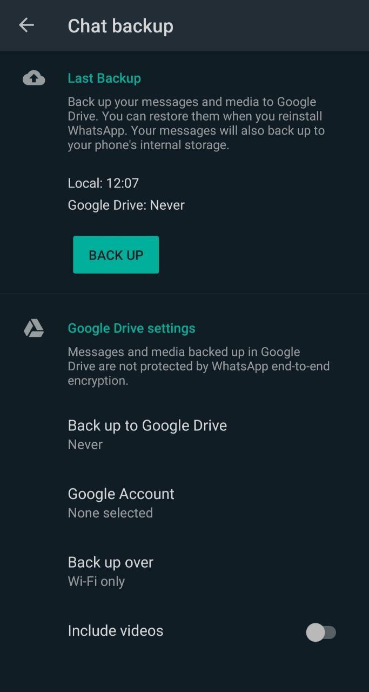
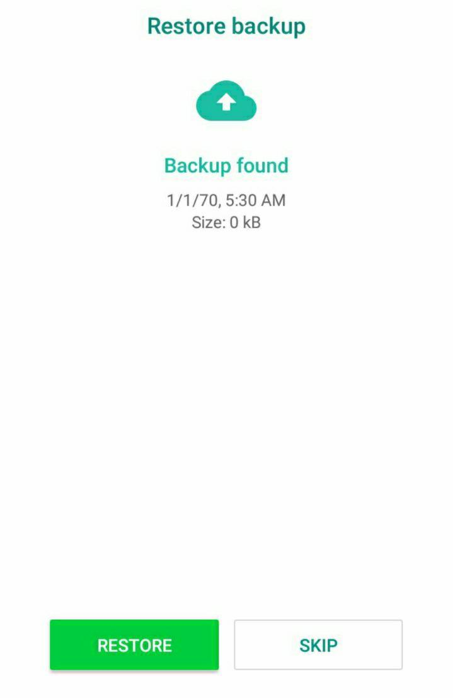

WhatsApp කියන්නෙ අද කාලෙ හැම ෆෝන් එකකම තියෙන Messenger App එකක් නෙ. ලෝකෙ වැඩිම පිරිසක් භාවිතා කරන instant messaging සේවාවත් මේක තමයි. මීට වඩා හොඳ ඒවා කොච්චර තිබුණත් අපේ අය වෙනස් වෙන්නත් කැමති නෑනෙ. ඉතින් අද අපි බලන්නෙ, මේ WhatsApp චැට් එකක් මැකිලා ගියාම ආපහු ඒක ගන්න ක්රමයක් ගැන.
Chat Backups ගැන ඉගෙනගනිමු.
මේ Chat Backups කියන පහසුකම තියෙන්නෙ ඔයා WhatsApp app එක uninstall කරලා ආයෙ install කළොත් හෝ, ඔයා අලුත් ෆෝන් එකක් ගත්තොත් ඔයාගෙ කලින් chats ටික නැතිවීම වළක්වන්න. මේ පහසුකම පාවිච්චි කරලා තමයි අපි මැකුණ මැසේජ් නැවත ගන්න යන්නෙ.
මැකුණ WhatsApp මැසේජ් ආයෙ ගන්න නම්, ඒ මැසේජ් මැකෙන්න කලින් ඔයා අනිවාර්යයෙන් Chat Backups පහසුකම ක්රියාත්මක කරන් ඉන්න වෙනවා. මේක සාමාන්යයෙන් අපි WhatsApp ඇප් එක අලුතින් install කරද්දි හදන setting එකක්.
WhatsApp මඟින් ඔයාට විවිධ ආකාරයේ ස්වයංක්රීය backup ක්රමවේද කීපයක් දීලා තියෙනවා. ඔයාට පුළුවන් මෙයින් Daily, Weekly හෝ Monthly හෙවත්, දිනපතා, සතිපතා හෝ මාස්පතා කියන ඔප්ෂන් වලින් එකක් හෝ off නොහොත් කිසිම බැකප් එකක් නොතියන්න හදන්නත්. මෙයින් Daily යන්න තෝරා ගැනීම වඩාත් හොඳයි මැකුණ messages නැවත ගන්න අවශ්ය නම්.
මෙතනදි ඔයා මතක තියාගන්න ඕන, iOS වලදි නම් WhatsApp මඟින් ගබඩා කරලා තියාගන්නේ වඩාම මෑතක දී save වුණ backup file එකක් විතරයි. නමුත් Android වල මෑතකම backup වුණ backup files දෙකක් තියාගන්නවා.
Backup settings වලට පිවිසීමට නම්,
WhatsApp Settings > Chats > Chat Backup
වෙත යන්න. එතැන තියෙන settings වලින් පුළුවන් ඔයාගෙ phone එකේ local විදියට save වෙන chat backup සහ Google Drive වෙතට කරන chat backup settings වෙත යන්න. ඒ වගේම අවශ්ය කරන chat backup frequency එක තෝරාගන්නත් පුළුවන්.

කලින් කිව්වා වගේ, Daily තෝරාගැනීම මඟින් ඔයා අතින් වැරදිලා මැකුණ චැට් එකේ පහුගිය දවසේ තිබුණ මැසේජ් ටික හරි ලබාගන්න පුළුවන්. Weekly වගේ තෝරලා තිබුණොත් ගන්න වෙන්නෙ පහුගිය සතියෙ මැසේජස්.
Delete වුණ මැසේජ් නැවත ලබාගනිමු
ඔයාට කරන්න තියෙන්නෙ WhatsApp ඇප් එක uninstall කරලා නැවත install කරන්නයි.
ඊට පස්සෙ, ඔයාගෙ කලින් තිබුණ number එකම දීලා ඔයා WhatsApp එක register කරගන්න ඕන. ඊට පස්සෙ අහනවා Restore කරන්නද කියලා, එතකොට පුළුවන් restore කරන්න කියලා දීලා ඔයාගෙ save වුණ backup file එකේ උදව්වෙන් මැකුණ මැසේජ් ටික නැවතත් ගන්න.

මෙතනදි restore වෙන්නෙ ඔයා කලින් හදපු settings වල තිබුණ frequency එකේ විදියටයි. මම කලිනුත් කිව්වනෙ, daily backups දාන් ඉන්නෙක වඩා හොඳයි.